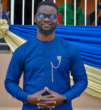

Miracle Lawrence | WDD 130
Meet Miracle Lawrence!
Hello, I'm Miracle Lawrence, a passionate educator, software development student, and aspiring tech-driven furniture innovator. With over five years of experience teaching mathematics, I have helped students build confidence and excel in their transitioning exams into high school. Beyond teaching, I have a strong interest in software development and have completed the PathwayConnect program as part of my journey toward a Bachelor’s degree in Software Development. I also have experience in sales and marketing, having served as the Head of Sales/Marketing at OKUBOMARINE Waste Management Company. My passion for technology and innovation extends into furniture production, where I aspire to create high-quality, tech-integrated furniture solutions. Inspired by my elder brother's craftsmanship, I aim to take furniture design to the next level by incorporating smart technology. I believe in lifelong learning, creativity, and making a positive impact through education and technology. Let's connect and create something amazing together!